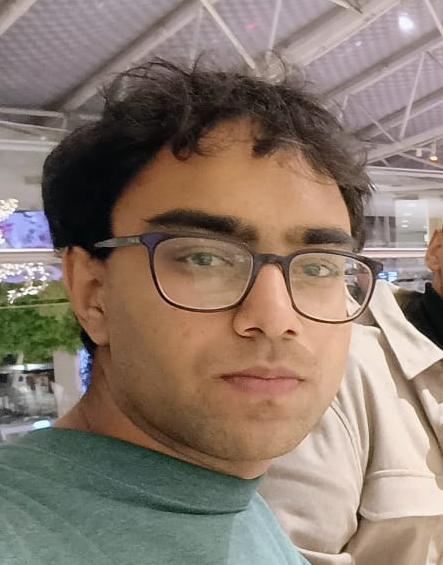

Learn about the philosophy, history, and experts behind OhmMyBox Consulting Group.
OhmMyBox Consulting Group is more than a firm; it is a family legacy. The foundation of our company was laid by our father, Tarlok Tarlok, who spent decades navigating the complexities of corporate leadership and enterprise growth. He recognized a critical gap in the consulting industry: founders didn't just need piecemeal advice; they needed a trusted, holistic partner.
What began as a seasoned executive's advisory practice has evolved into a formidable, multi-generational partnership. After his retirement, his son, Gaurav, picked up his mantle and continued this firm's reputation for excellence. OhmMyBox now bridges the gap between battle-tested wisdom and modern, agile execution. We have sat on both sides of the boardroom table—as founders and as advisors. Because we started as a family, we understand that building a business is never just about the bottom line; it's about building a future, securing a legacy, and navigating the sleepless nights and thrilling milestones together.
Because we are a family-built enterprise, our approach to consulting is inherently personal. We do not believe in temporary fixes, and we certainly don't believe in handing you a dense PDF report and walking away. Our philosophy is rooted in generational success and absolute alignment. When you partner with OhmMyBox, we treat your business with the same fierce dedication, protective oversight, and exactitude that we apply to our own.
Our operational pillars are simple but uncompromising:
Ultimately, we believe that brilliant ideas are abundant, but brilliant execution is rare. Our commitment is to stand shoulder-to-shoulder with you, turning visionary concepts into profitable, enduring realities.

Managing Partner & Founder
With over 7 successful startup ventures, Mr. Gaurav specializes in high-level business planning and financial structuring.